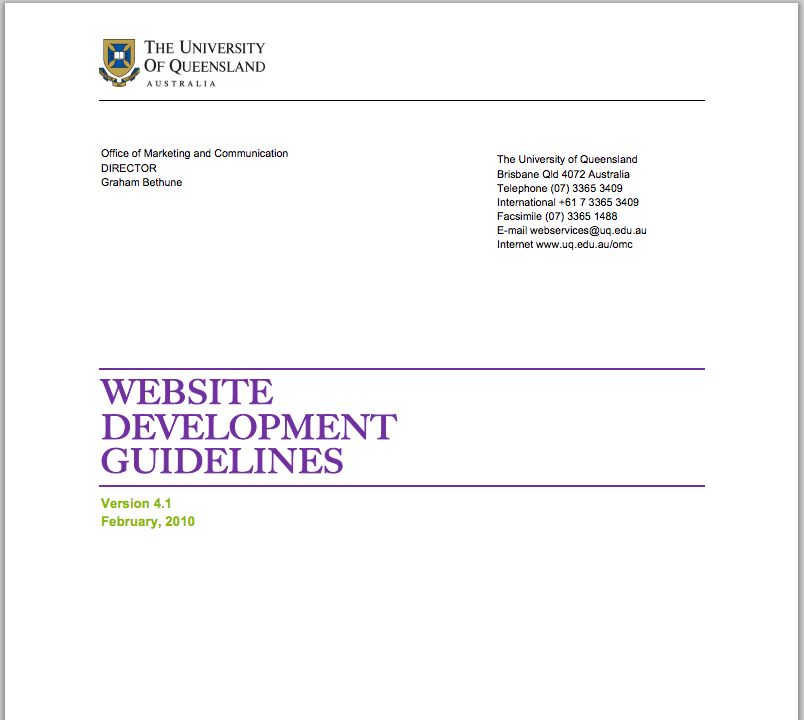
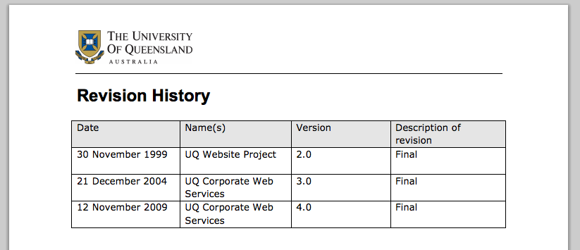
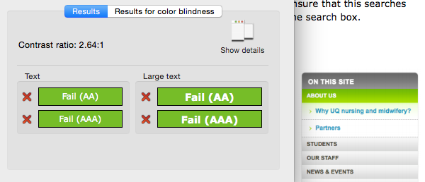
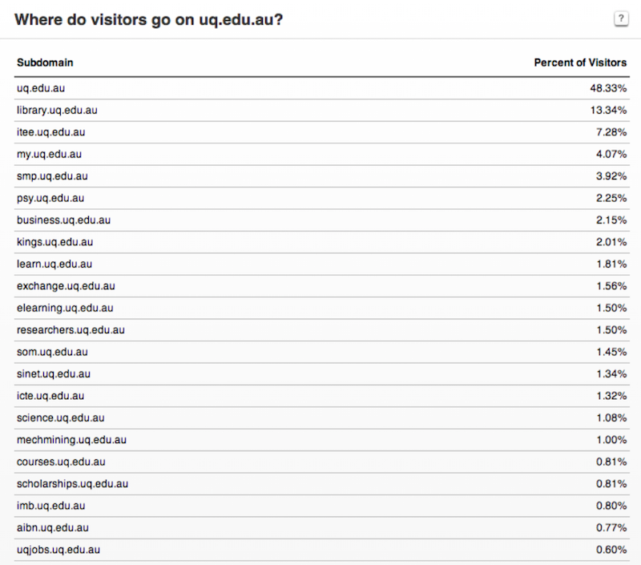
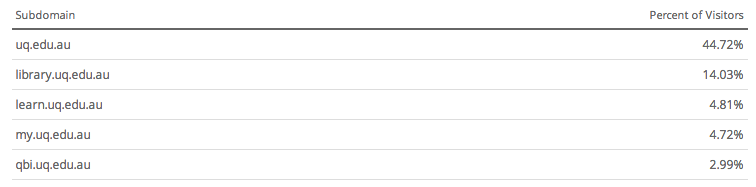
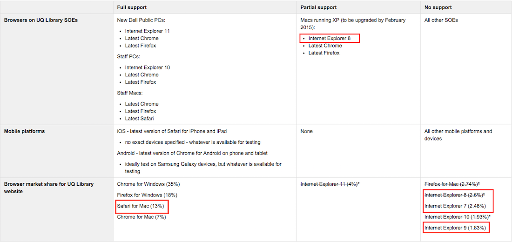

UQ Web Challenges
- Design
- Development
Design
How can we achieve consistent:
- styles?
- user interface design patterns?
- user experience, which is itself the UQ brand
Design
Why do we care?
- easier for users to learn how to use across different systems
- increases trust with UQ brand
Development
How can we achieve:
- simpler version control?
- common, reusable code?
- consistent naming conventions?
- less work for ITS and all UQ developers?
- a single location to load assets?
- a world without duplicate code?
Development
Why do we care?
- Users experience faster load times/more seamless experience if assets only need to be loaded once
- UQ-wide components (e.g. logo, header, footer) change often but need to be updated everywhere
- duplication across 600+ sites is unsustainable
- naming conventions are hard to agree on and stick with
- naming conventions "best practices" change over time
- naming conventions inevitably don't get followed in large organisations
Solutions so far
- OMC Guidelines
- Bootstrap/Foundation + GitHub
- Best guess
- myUQ Style Guide
OMC Guidelines



Bootstrap/Foundation + GitHub
- excellent starting point
- minimalist, pleasing aesthetic, responsive design
- consistent ui/ux across many modern sites (e.g. navbar, hamburger menu)
- doesn't cover all cases or solve all the problems
- still a need for custom components
However...
Best guess
- lots of extra work spent on low value components
- can be overridden weeks later by a web manager
- web managers are no more qualified to make a design decision because there are no guidelines
myUQ Style Guide
- gives hope to UQ developers everywhere as the first real attempt at unifying UQ components and style
- not yet as comprehensive as needed
- ITS development time is valuable and limited
Any other issues?
UQ Library - A Case Study

Alexa data, 2013

Alexa data, 2014
UQ Library - A Case Study
- high traffic: most visited *.uq.edu.au site
- 60+ seperate systems, but with similar branding and styling needs
UQ Library - A Case Study
- Bootstrap, AngularJS, GitHub since 2013
- has been much better than past workflows
- still requires frequent "reinventing of the wheel"
Design Sprints
GitHub
Enter <web-components>
A single component
An application
Web Components:
- think of it like a front-end API
- MVC is effectively encapsulated within a single html tag
Material Design:
- a unifying design language based on the physics of everyday objects
- mobile first, device agnostic, high-resolution friendly
- based on extensive usability and psychological research
Polymer:
- the implementation of Material Design and Web Components developed by Google
- based on high performance - 60fps
- browser compatibility
- accessibility
Risk Assessment
Risks
- learning curve
- currently v0.4 - some unknowns involved in a still-early framework
Mitigation: investigate specific unknowns and assess risk; learning curve has so far not been difficult as it follows many html and js conventions
Risks
- Browser Compatibility not as complete as Bootstrap/Foundation/jQuery
Mitigation: use current/old version as fallback for the <10% of users on old browsers, provide the other 90% with a far greater experience

Benefits
- Reusable, highly modular components
- Self-contained code
- Comprehensive guidelines
- Performance
- Accessibility